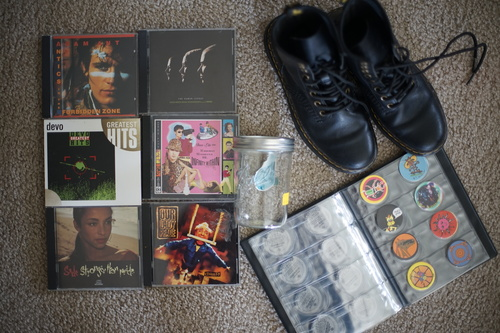

I'm not done, but I finally hit the credits in Pokemon Arceus. I've been calling it Arkeous but I've heard other call it Arseus? Ark-phone? Arse-phone?? Anyway, the game is good and a lot of fun and they gave us two great boys, Volo and Adaman. I'm very happy with how much time they let me spend with Adaman!!! He's so cute~
I have just discovered I don't like Adam Ant.
RED ALERT!! I JUST FOUND OUT THERE'S A HUMAN LEAGUE COVER OF KIMI NI MUNE KYUN AND IT'S NOT ON THIS DISC
They're size 5, but I can get my foot in them, unlike my size 6 1460s (when they were brand new), so I think they'll stretch out a little and work.
underwhelming
For Ryan's aeropress activities.
he'll yeah. pogs included
In the land of expensive CDs...
Ryan's.
Ryan's.
Ryan proudly handed me this awesome find! He can't understand why I like A-Teens more than ABBA.
Ryan's. I wasn't impressed with last Muse album I bought, but this one does have a song that was on a mix CD I listened to many years ago.
Ryan didn't hand this one to me despite seeing it?! Girl on TV is so good.
I wanted it, but it's Ryan's.
Ryan's. 2 discs including SCATMAN JOHN?!!!!
They're all pretty full. Looks like one may have been used once. Havana (brown), green, purple, south sea blue, Florida blue.
Bought at a different thrift store where prices were better.